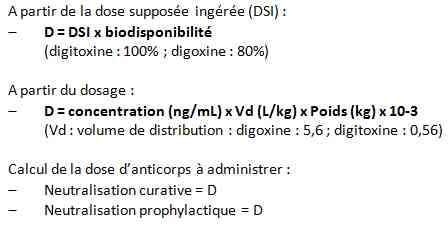

Bienvenue Sur Medical Education
Intoxication : digitalique
Spécialité : toxicologie /
Points importants
-
Intoxication médicamenteuse peu fréquente, mais grave
-
Intoxication aiguë ou, plus souvent, surdosage au cours d'un traitement chronique
-
Traitement antidotique par fragments Fab d'anticorps spécifiques qui permet de réduire la mortalité, s'il est utilisé tôt
Présentation clinique / CIMU
Présentation clinique / CIMU
Antécédents
- Surdosage au cours d'un traitement chronique : sujet âgé aux ATCD cardiovasculaires, arythmie et insuffisance cardiaque
- Dépression
- TS médicamenteuse
Circonstances de survenue
- Digoxine plus souvent que digitoxine
- Exceptionnellement : décoction d'origine végétale
Facteurs déclenchants ou facteurs favorisant l'intoxication (par surdosage)
- Age
- Cardiopathie : insuffisance cardiaque sévère, infarctus du myocarde, myocardite, chirurgie récente
- Insuffisance rénale, hémodialyse
- Hypothyroïdie
- Médicaments : diurétiques, stéroïdes, vérapamil, amiodarone, quinidine, réserpine, catécholamines, cyclosporine
SIGNES FONCTIONNELS
- Expression clinique identique, qu'il s'agisse de digoxine ou de digitoxine
- Seule différence : pharmacocinétique : demi-vie digoxine : 39 h et digitoxine : 161 h
Troubles digestifs
- Fréquents
- Nausées et vomissements
- Doivent faire évoquer un surdosage en cas de traitement chronique
- En cas d'intoxication aiguë, précoces et sans parallélisme avec la gravité
- Non calmés par l'atropine, mais par les anticorps antidigitaliques
- Autres troubles digestifs parfois observés : douleurs abdominales, diarrhée
Troubles neurosensoriels
- Céphalées
- Myalgies
- Asthénie
Troubles oculaires
- Dyschromatopsie avec auréoles colorées
- Scotomes scintillants
- Vision floue ou tremblante ou, plus rarement, micropsie, amblyopie
- Semblent plus fréquents lors des surdosages
NB : En cas d'intoxication aiguë, environ un quart des patients présentent, de façon précoce, une obnubilation, une somnolence ou une agitation avec angoisse ; plus rarement, un véritable état psychotique aigu (délire confusionnel, hallucinatoire) d'apparition plus tardive que les troubles digestifs. Semblent accessibles au traitement par anticorps antidigitaliques
EXAMEN CLINIQUE
Manifestation cardiaques
- Effets inotrope et bathmotrope positifs et effets chronotrope et dromotrope négatifs
- Font le pronostic de l'intoxication (qu'elle soit aiguë ou chronique)
- Il peut s'agir de troubles de la conduction et de troubles du rythme, volontiers concomitants et liés
- Bradycardie prédominante ; PA conservée
- Expression clinique limitée, jusqu'à la catastrophe rythmique : asystolie ou FV
EXAMENS PARACLINIQUES SIMPLES
L'ECG est l'examen clé
- Troubles de conduction
- Peuvent être très précoces
- Dangereux car ils exposent aux risques de bradycardie voire d'asystolie
- Bradycardie et les troubles de conduction font le lit aux TDR ventriculaire (par démasquage de foyers de suppléance et par désynchronisation des périodes réfractaires qui favorise les réentrées ventriculaires)
Troubles de la conduction sino-auriculaire : bloc sino-auriculaire de troisième degré
- Bloc auriculo-ventriculaire de tous degrés
- Chez les patients traités par digitalique pour une fibrillation auriculaire, le surdosage s'exprime le plus souvent sous forme d'une bradycardie irrégulière
Troubles de l'automatisme
- Deux mécanismes d'arythmies ventriculaires : foyer ectopique responsable d'un hyperautomatisme ou phénomène de réentrée
- Extrasystoles ventriculaires plus ou moins fréquentes, tachycardie ou fibrillation ventriculaires
- Valeur pronostique très péjorative
Autres anomalies électrocardiographiques
- Aplatissement de l'onde T qui devient négative, mais reste asymétrique
- Abaissement du point J avec un sous-décalage du segment ST à type de cupule à concavité supérieure dite « cupule digitalique »
- En cas d'intoxication aiguë, la présence d'une cupule signe l'intoxication ; elle n'a pas de valeur en cas de surdosage
- Espace QT souvent raccourci (par accélération de la repolarisation)
Signes paracliniques
BIOLOGIE
-
Atteinte rénale et hyperkaliémie
-
Insuffisance rénale : très fréquente au cours des intoxications chroniques, peu fréquente au cours des intoxications aiguës
-
Rappel : élimination rénale pour la digoxine, métabolisme hépatique pour la digitoxine
-
Hyperkaliémie : constamment retrouvée au cours des intoxications graves ; étroitement liée au pronostic
-
Hypokaliémie : favorise les troubles du rythme
-
Hypercalcémie : favorise les troubles du rythme (action synergique avec les digitaliques, surtout sur l'automatisme cardiaque)
ANALYSE TOXICOLOGIQUE
-
Dosage de digoxine
-
La confirmation analytique du diagnostic n'est pas absolument indispensable au traitement
-
Valeur normales :
-
digoxine < 2,0 ng/mL (2,6 mmol/L)
-
digitoxine < 30 ng/mL (39 mmol/L)
-
En cas d'administration d'anticorps avant/sans dosage, prélever un tube pour réaliser secondairement le dosage
-
Dosage impossible après administration d'anticorps
Diagnostic étiologique
- digoxine < 2,0 ng/mL (2,6 mmol/L)
- digitoxine < 30 ng/mL (39 mmol/L)
Diagnostic étiologique
Surdosage au cours d'un traitement chronique
- L'insuffisance rénale est souvent un facteur déclenchant ou favorisant ; déshydratation, interaction pharmacologique
Intoxication aiguë médicamenteuse : aucune spécificité
- Penser à l'exceptionnelle décoction de plante
Diagnostic différentiel
-
Par principe, le diagnostic d'intoxication est un diagnostic d'élimination
-
Le diagnostic doit systématiquement être envisagé chez un patient traité par digitalique
-
L'association du contexte, des signes neurosensoriels, de l'hyperkaliémie (et de l'insuffisance rénale) et des anomalies ECG laisse peu de place au doute
-
La confirmation analytique du diagnostic n'est pas absolument indispensable au traitement
Traitement
-
L'immunothérapie est actuellement le traitement de référence des intoxications digitaliques
-
Les catécholamines sont à proscrire, elles favorisent la survenue de troubles du rythme ventriculaire
-
Les anti-arythmiques sont contre-indiqués, ils potentialisent les troubles de conduction
TRAITEMENT PREHOSPITALIER/INTRAHOSPITALIER
Traitement
- L'immunothérapie est actuellement le traitement de référence des intoxications digitaliques
- Les catécholamines sont à proscrire, elles favorisent la survenue de troubles du rythme ventriculaire
- Les anti-arythmiques sont contre-indiqués, ils potentialisent les troubles de conduction
TRAITEMENT PREHOSPITALIER/INTRAHOSPITALIER
Traitement épurateur/évacuateur
- Conformément aux recommandations : en cas d'intoxication aiguë, charbon activé dans l'heure suivant l'ingestion
- L'administration répétée de charbon activé (25 à 50 g toutes les 6 h) est proposée dans les intoxications à la digitoxine (circulation entéro-hépatique). Sa tolérance est médiocre
- Hémodialyse et hémoperfusion : pas d'intérêt clinique
Traitement symptomatique
- L'immunothérapie est actuellement le traitement de référence des intoxications digitaliques
- Les catécholamines sont à proscrire, elle favorisent la survenue de troubles du rythme ventriculaire
- Les anti-arythmiques sont contre-indiqués, ils potentialisent les troubles de conduction
-
Prévenir et de corriger les troubles hydro-électrolytiques et autres facteurs aggravants :
- corriger hypokaliémie par apports parentéraux ; correction prudente pour éviter hyperkaliémie
- hyperkaliémie : contre-indique tout apport de potassium. Efficacement traitée par les anticorps. Hypokaliémiants exposent au risque secondaire d'hypokaliémie
- corriger hypercalcémie, respecter hypocalcémie
- corriger anomalies en magnésium, sodium ou phosphore
-
Traitement des troubles du rythme et de la conduction :
- les catécholamines sont à proscrire, elles favorisent la survenue de troubles du rythme ventriculaire
- les anti-arythmiques sont contre-indiqués, ils potentialisent les troubles de conduction
-
en cas de bradycardie :
- atropine (0,5 - 1 mg IVD) : peut corriger les effets d'une stimulation vagale. Exerce un effet anti-arythmique
- la répétition des doses peut provoquer une encéphalopathie atropinique
Traitement spécifique - antidote
 _689 Tableau Calcul de la dose de digitalique à neutraliser = D
- Indications du traitement : neutralisation curative ou prophylactique
-
Neutralisation prophylactique ou semi-équimolaire (neutralisation de la moitié des molécules de digitaliques présentes dans l'organisme) : patients avec risque vital potentiel (facteur de risque ou signe de gravité) :
- âge > 55 ans
- sexe masculin
- cardiopathie préexistante
- bloc auriculo-ventriculaire
- kaliémie > 4,5 mEq/L
- bradycardie < 60/min (réfractaire atropine)
-
Neutralisation curative ou équimolaire (neutralisation de toutes les molécules de digitaliques présentes dans l'organisme) : patients avec risque vital immédiat :
- tachycardie ou fibrillation ventriculaire
- bradycardie < 40 bpm (réfractaire atropine)
- kaliémie > 5 mEq/L
- infarctus mésentérique
- choc cardiogénique
-
La dose à administrer peut être calculée :
-
à partir de la dose supposée ingérée (DSI) (intoxication aiguë) :
- D = DSI x biodisponibilité (digitoxine : 100% ; digoxine : 80%)
-
ou à partir du dosage de digoxine/digitoxine :
- D = concentration (ng/ml) x Vd (L/kg) x poids (kg) x 10 - 3 (Vd : volume de distribution : digoxine 5,6 ; digitoxine : 0,56)
-
à partir de la dose supposée ingérée (DSI) (intoxication aiguë) :
- Les Fab antidigitaliques sont disponibles sous forme de flacon (Digibind®) de 38 mg de Fab neutralisant 0,5 mg de digoxine ou digitoxine
- Administration après dilution dans du sérum physiologique en perfusion d'autant plus rapide que l'arrêt cardiaque semble imminent
- Réversibilité des signes cliniques obtenue dans les 60 min
- Anomalies électrocardiographiques et l'hyperkaliémie sont corrigées en 1 à 4 h
- La tolérance est bonne, réactions allergiques exceptionnelles
Mécanisme / description
Mécanisme de la toxicité
- Effet vagal
- Inhibition de la pompe NaK-ATPase membranaire => par interaction avec les échanges Na+/Ca++ => surcharge intracellulaire en calcium => accélération de dépolarisation et post-potentiel
- A dose toxique : stimulation du système nerveux sympathique => augmentation d'activité des foyers ectopiques
Critères de gravité et facteurs pronostiques
-
Age :
- mortalité < 10% entre 15 et 40 ans, de l'ordre de 35% entre 40 et 60 ans et de l'ordre de 60% au-delà de 60 ans
-
Sexe :
- pour certains auteurs, le pronostic est moins bon chez l'homme
-
Kaliémie :
- mortalité de 2,4 % pour les patients avec une kaliémie < 5 mmol/L ; de 35% pour les patients avec une kaliémie entre 5 et 6,4 mmol/L et de 90 % pour les patients avec une kaliémie supérieure à 6,4 mmol/L
-
Bloc auriculo-ventriculaire :
- présence d'un bloc auriculo-ventriculaire plus fréquente (p = 10-3) dans le groupe des patients décédés (77%), que dans celui des patients ayant survécu (39%)
-
Antécédents cardiaques :
- mortalité en absence d'antécédent cardiaque connu : 10% ; 40% chez les patients à fonction myocardique altérée
-
Dose ingérée et taux sanguin :
- dose ingérée et le taux sanguin liés de façon significative au pronostic (intoxications aiguës)
- concentrations sériques moins élevées au cours des surdosages (qu'au cours des intoxications aiguës) et leur relation avec le pronostic pas clairement établie
Bibliographie
-
Bismuth C, Gaultier M, Conso F, et al. Hyperkaliemia in acute digitalis poisoning : prognostic significance and therapeutic implication. Clin Toxicol 1973; 6:153 - 162
-
Smith TW, Haber E, Yeatman L, Butler VP Jr. Reversal of advanced digoxin intoxication with Fab fragments of digoxin-specific antibodies. N Engl J Med 1976;294:797-800
-
Dally S, Alperovitch A, Lagier G et al. Facteurs pronostiques de l'intoxication digitalique aiguë. Nouv Press Med, 1981, 10 : 2257-2260
-
Lapostolle F, Borron SW, Verdier C, Arnaud F, Couvreur J, Mégarbane B, Baud FJ, Adnet F. Assessment of digoxin antibody use in patients with elevated serum digoxin following chronic or acute exposure. Intens Care Med, 2008, 34, 1448-53
-
Lapostolle F, Borron SW, Verdier C, Taboulet P, Adnet F, Clemessy JL, Bismuth C, Baud F. Digoxin-specific Fab fragments as single first-line therapy in digitalis poisoning. Crit Care Med, 2008, 36, 3014-8
Auteur(s) : Frédéric LAPOSTOLLE